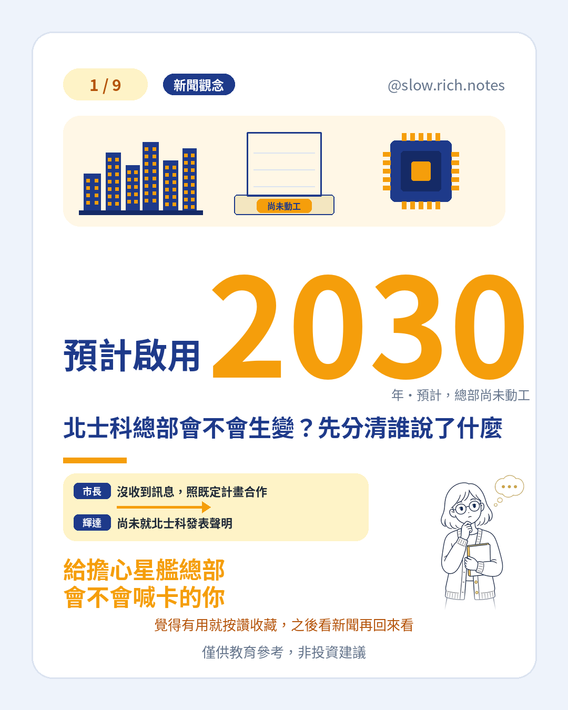

黃仁勳承認不忠、輝達董事會啟動調查之後，台灣最常被問的是：北士科的「星艦總部」會不會生變？這座台灣總部還沒動工，先前規劃預計 2030 年啟用。美國時間 11 月 8 日，輝達創辦人兼執行長發信承認對妻子不忠，並向家人與同事道歉；同日董事會因媒體報導他可能成為外國情報行動的目標，啟動獨立調查。11 月 10 日已請外部律師主持。截至本稿（台北時間 11 月 12 日上午），撤換仍是據報導，他仍是官方在任執行長。
先分清誰說了什麼。台北市長蔣萬安 11 月 9 日、10 日都說，目前沒有收到相關訊息，與輝達溝通順暢，會按照既定計畫繼續合作。這是市長的說法，代表北市目前沒接到生變訊息；輝達本身這段期間沒有就北士科發表聲明，不要寫成「公司已證實總部不變」。風波本身也一樣：已證實的是他承認不忠、公司正在調查；女方身分、間諜指控、第二段關係、董事會準備撤換，都還是據報導、尚未經公司證實。
高力國際黃舒衛、宏大國際陳益盛、第一太平戴維斯丁玟甄等認為，輝達在台至少有 150 家供應鏈廠商，選台北看的是供應鏈和人才；就算換執行長，在台布局也難大幅改掉。這是業界判斷，不是官方保證。變數仍在：調查結果還沒出來；若真的換執行長，投資時程可能重新排序。公司對外的臉若高度綁在一個人身上，市場會先擔心布局會不會動，但股價波動也不等於總部已經改了。若想對照「指數漲、個股仍可能跌」，可讀費半大漲那天，輝達卻獨自收黑。
周邊房價已先反映預期。非凡新聞提到，北士科重劃區部分建案每坪上看 130 萬元、甚至逼近 150 萬元，北投預售屋平均每坪 112.8 萬元。總部還沒動工、距離預計啟用還有好幾年，這些價格裡已經含了一部分對未來的想像；已經跑在前面的預期，本身就是風險，要小心。這不是買賣房或進出場建議。若還在打基本功，可以先看看不懂財經新聞？這 10 個詞先學起來，或免費領取《投資新手入門清單》。